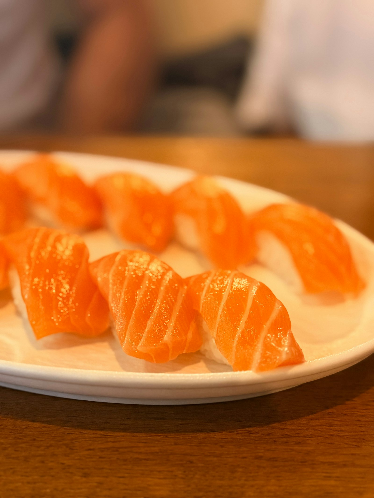
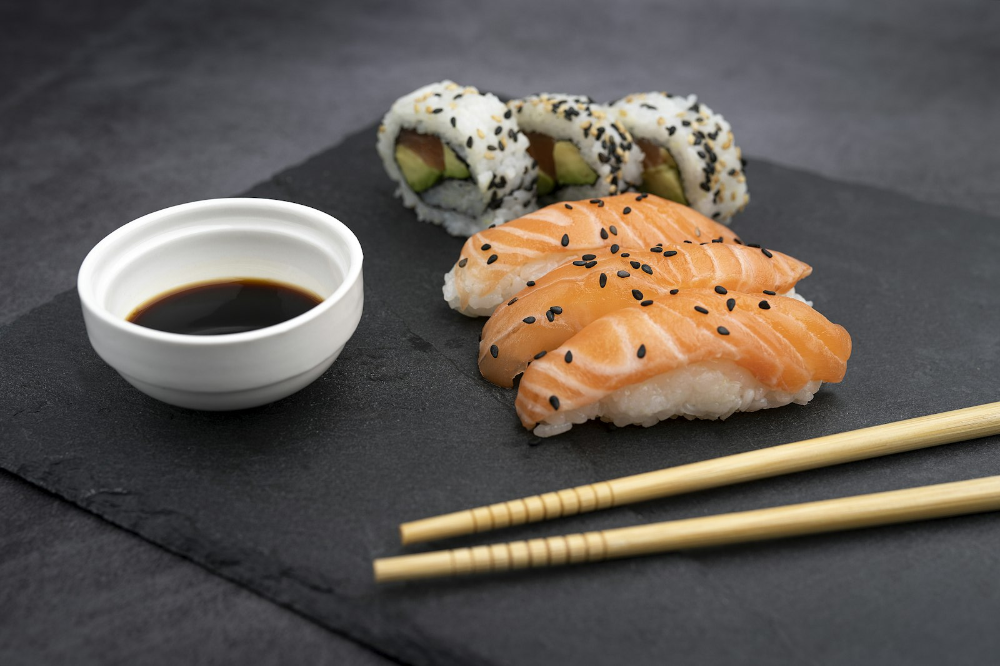

The feeling of eating sushi at a restaurant in Korea
Not a grocery case. Not a type specimen. You are on the stool. The counter is pale wood. A piece is set in front of you while it is still warm from the rice. You eat it. Then the next one.
오늘의 초밥연어광어참치새우장어오마카세잘 먹겠습니다

From the seat · 연어 초밥, warm room, people still in the blur

Hands at the edge of the board. Soy already poured. Chopsticks waiting. This is the distance of a Korean sushi counter: close enough to talk, close enough to smell the rice vinegar.
Inspiration
Photograph the meal as it is eaten in Korea — the quiet of an omakase counter, the clatter of a neighborhood 초밥집, the pause before the first bite. The picture should feel like sitting down, saying 잘 먹겠습니다, and taking the piece while the shari is still body-warm against cold fish.
What it feels like
The counter
You face the chef. In Seoul this is the dachi: eight seats at Sosuheon in a hanok, a neighborhood bar like Sushido in Gangnam, or Sushi Cho’s pale wood and hinoki. Distance collapses. Each nigiri is made, brushed, and placed. You do not wait for a full plate unless you asked for one.
The bite
Korean counters often cut a generous neta — thicker salmon, a little more than Tokyo restraint. Vinegar in the rice, a wipe of nikiri, maybe a single sesame seed. Eat immediately. Ginger is a reset, not a pile. Tea or beer at the left hand. Conversation with the itamae is part of the food.
The room
Soft downlights on wood, not supermarket fluorescent. Low talk. Knife on the board. At lunch, parents from Daechi after academy meetings; at night, couples and solo diners. The photograph should keep a little of the room — a shoulder, a lamp, the rail of wooden menu slats behind the fish.
What it is not
Kimbap on a red table. A grab-and-go lid. An overhead grid of calorie labels. Those are Korea too, but they are not the feeling of eating sushi in a restaurant. Keep them in a separate pile labeled elsewhere.
Three restaurant temperatures
초밥집
Neighborhood. White plate, several nigiri at once, 연어 first. Warm indoor light, wooden table, friends across from you. Shoot 30–45° from the diner, plate in the foreground, room still breathing behind.
회전초밥
Conveyor color, stacked plates, quicker hands. The feeling is play, not ceremony. Photograph the passing dish at eye height, not a studio hero.
오마카세
One piece. Counter only. Eat now. Cool-neutral light so the fish stays alive. Include the chef’s fingers leaving the geta. This is Sushi Matsumoto’s measured pace, Sushi Cho’s quiet, Sosuheon’s eight seats.
Shoot from the stool — two hours
Hour 1 · Sit and eat
Book lunch at a counter (Sushido-style neighborhood omakase) or a busy 초밥집. Phone or one fast prime. No flash. Ask once, then put the camera down between bites.
Empty seat / wet towel / chopsticks — arrival
Piece landing on the board, chef’s hand still in frame
Your own chopsticks lifting 연어, 45°
Soy dish, tea, the menu slats out of focus
Hour 2 · The other temperature
If hour 1 was quiet omakase, go to a brighter 초밥집 or kaiten. If hour 1 was casual, stay for the nigiri sequence and shoot only what you are served. End with one wide of the counter from the door — the feeling of the room after you have eaten.
Full white plate of salmon nigiri, people in the blur
One dark still life: soy, ginger, last piece
Hands only — no faces unless you have permission
A thank-you shot: empty geta, grain of the wood
Light for the feeling
Restaurant light is the light. Do not overpower it. Open the shadows with a white napkin if the fish goes dead in the face.
Keep white balance honest: too warm and tuna looks cooked; too cool and the hinoki dies.
Shoot at the height of a seated diner, not standing over the plate like a menu photographer.
The piece has a life of about a minute. The feeling is speed plus courtesy.
The Sushi Maru grocery case and kimbap stills stay in the files as contrast: labeled lids, calorie type, market gimbap. They are Korea-adjacent merchandising. They are not the feeling of eating sushi at a restaurant. Do not let them set the color or the camera height.
Credits
Still photographs from Unsplash and Pexels, used as stand-ins for restaurant light and counter distance. Wooden menu slats are a Korean sushi-counter commonplace, not a CBS cafeteria wall. Field grocery photo remains in the repo only as the “elsewhere” note.